Our interest in this chapter is in situations in which we can associate to each element of a population or sample two measurements x and y, particularly in the case that it is of interest to use the value of x to predict the value of y. For example, the population could be the air in automobile garages, x could be the electrical current produced by an electrochemical reaction taking place in a carbon monoxide meter, and y the concentration of carbon monoxide in the air. In this chapter we will learn statistical methods for analyzing the relationship between variables x and y in this context.
A list of all the formulas that appear anywhere in this chapter are collected in the last section for ease of reference.
The following table gives examples of the kinds of pairs of variables which could be of interest from a statistical point of view.
| x | y |
|---|---|
| Predictor or independent variable | Response or dependent variable |
| Temperature in degrees Celsius | Temperature in degrees Fahrenheit |
| Area of a house (sq.ft.) | Value of the house |
| Age of a particular make and model car | Resale value of the car |
| Amount spent by a business on advertising in a year | Revenue received that year |
| Height of a 25-year-old man | Weight of the man |
The first line in the table is different from all the rest because in that case and no other the relationship between the variables is deterministic: once the value of x is known the value of y is completely determined. In fact there is a formula for y in terms of x: Choosing several values for x and computing the corresponding value for y for each one using the formula gives the table
We can plot these data by choosing a pair of perpendicular lines in the plane, called the coordinate axes, as shown in Figure 10.1 "Plot of Celsius and Fahrenheit Temperature Pairs". Then to each pair of numbers in the table we associate a unique point in the plane, the point that lies x units to the right of the vertical axis (to the left if ) and y units above the horizontal axis (below if ). The relationship between x and y is called a linear relationship because the points so plotted all lie on a single straight line. The number in the equation is the slope of the line, and measures its steepness. It describes how y changes in response to a change in x: if x increases by 1 unit then y increases (since is positive) by unit. If the slope had been negative then y would have decreased in response to an increase in x. The number 32 in the formula is the y-intercept of the line; it identifies where the line crosses the y-axis. You may recall from an earlier course that every non-vertical line in the plane is described by an equation of the form , where m is the slope of the line and b is its y-intercept.
Figure 10.1 Plot of Celsius and Fahrenheit Temperature Pairs
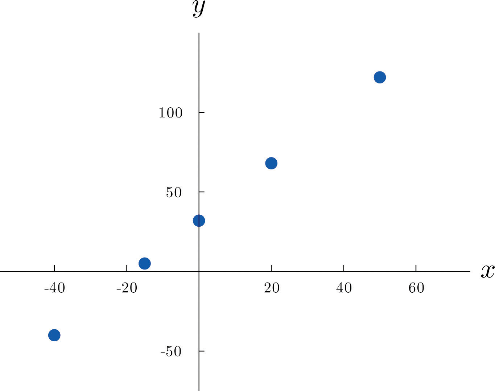The relationship between x and y in the temperature example is deterministic because once the value of x is known, the value of y is completely determined. In contrast, all the other relationships listed in the table above have an element of randomness in them. Consider the relationship described in the last line of the table, the height x of a man aged 25 and his weight y. If we were to randomly select several 25-year-old men and measure the height and weight of each one, we might obtain a collection of pairs something like this:
A plot of these data is shown in Figure 10.2 "Plot of Height and Weight Pairs". Such a plot is called a scatter diagram or scatter plot. Looking at the plot it is evident that there exists a linear relationship between height x and weight y, but not a perfect one. The points appear to be following a line, but not exactly. There is an element of randomness present.
Figure 10.2 Plot of Height and Weight Pairs
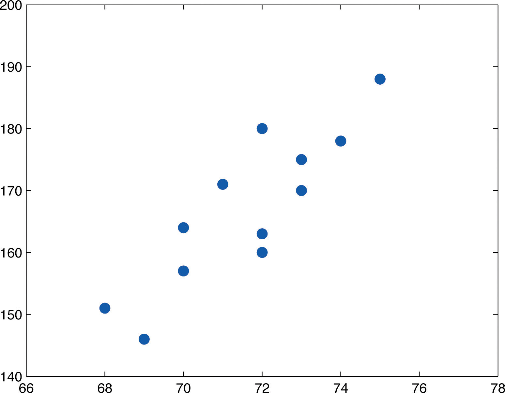In this chapter we will analyze situations in which variables x and y exhibit such a linear relationship with randomness. The level of randomness will vary from situation to situation. In the introductory example connecting an electric current and the level of carbon monoxide in air, the relationship is almost perfect. In other situations, such as the height and weights of individuals, the connection between the two variables involves a high degree of randomness. In the next section we will see how to quantify the strength of the linear relationship between two variables.
A line has equation
A line has equation
A line has equation
A line has equation
Based on the information given about a line, determine how y will change (increase, decrease, or stay the same) when x is increased, and explain. In some cases it might be impossible to tell from the information given.
Based on the information given about a line, determine how y will change (increase, decrease, or stay the same) when x is increased, and explain. In some cases it might be impossible to tell from the information given.
A data set consists of eight pairs of numbers:
A data set consists of ten pairs of numbers:
A data set consists of nine pairs of numbers:
A data set consists of five pairs of numbers:
At 60°F a particular blend of automotive gasoline weights 6.17 lb/gal. The weight y of gasoline on a tank truck that is loaded with x gallons of gasoline is given by the linear equation
The rate for renting a motor scooter for one day at a beach resort area is $25 plus 30 cents for each mile the scooter is driven. The total cost y in dollars for renting a scooter and driving it x miles is
The pricing schedule for labor on a service call by an elevator repair company is $150 plus $50 per hour on site.
The cost of a telephone call made through a leased line service is 2.5 cents per minute.
Large Data Set 1 lists the SAT scores and GPAs of 1,000 students. Plot the scatter diagram with SAT score as the independent variable (x) and GPA as the dependent variable (y). Comment on the appearance and strength of any linear trend.
http://www.gone.2012books.lardbucket.org/sites/all/files/data1.xls
Large Data Set 12 lists the golf scores on one round of golf for 75 golfers first using their own original clubs, then using clubs of a new, experimental design (after two months of familiarization with the new clubs). Plot the scatter diagram with golf score using the original clubs as the independent variable (x) and golf score using the new clubs as the dependent variable (y). Comment on the appearance and strength of any linear trend.
http://www.gone.2012books.lardbucket.org/sites/all/files/data12.xls
Large Data Set 13 records the number of bidders and sales price of a particular type of antique grandfather clock at 60 auctions. Plot the scatter diagram with the number of bidders at the auction as the independent variable (x) and the sales price as the dependent variable (y). Comment on the appearance and strength of any linear trend.
http://www.gone.2012books.lardbucket.org/sites/all/files/data13.xls
There appears to a hint of some positive correlation.
There appears to be clear positive correlation.
Figure 10.3 "Linear Relationships of Varying Strengths" illustrates linear relationships between two variables x and y of varying strengths. It is visually apparent that in the situation in panel (a), x could serve as a useful predictor of y, it would be less useful in the situation illustrated in panel (b), and in the situation of panel (c) the linear relationship is so weak as to be practically nonexistent. The linear correlation coefficient is a number computed directly from the data that measures the strength of the linear relationship between the two variables x and y.
Figure 10.3 Linear Relationships of Varying Strengths
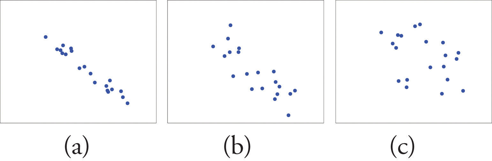The linear correlation coefficientA number computed directly from the data that measures the strength of the linear relationship between the two variables x and y. for a collection of n pairs of numbers in a sample is the number r given by the formula
where
The linear correlation coefficient has the following properties, illustrated in Figure 10.4 "Linear Correlation Coefficient ":
Figure 10.4 Linear Correlation Coefficient R
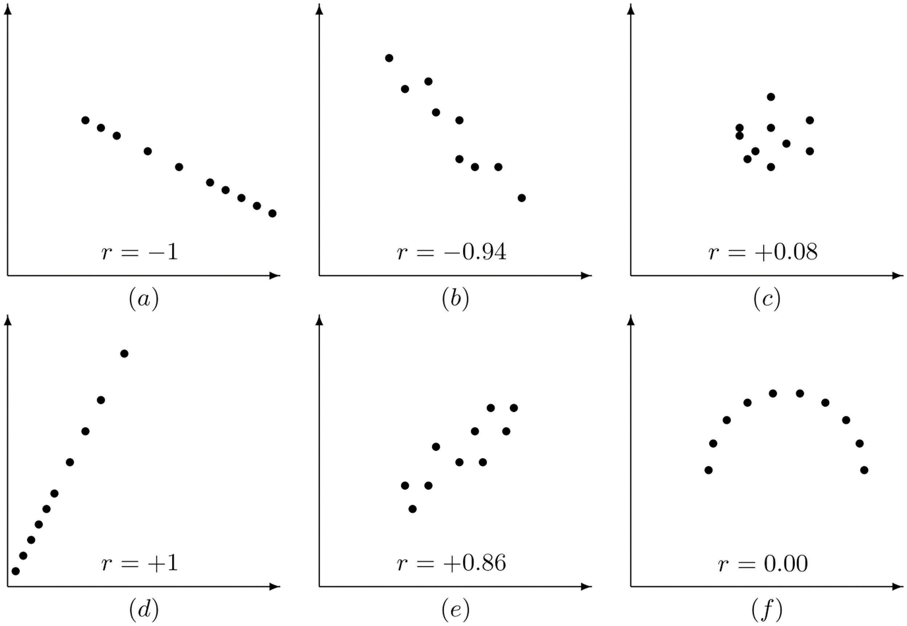Pay particular attention to panel (f) in Figure 10.4 "Linear Correlation Coefficient ". It shows a perfectly deterministic relationship between x and y, but because the relationship is not linear. (In this particular case the points lie on the top half of a circle.)
Compute the linear correlation coefficient for the height and weight pairs plotted in Figure 10.2 "Plot of Height and Weight Pairs".
Solution:
Even for small data sets like this one computations are too long to do completely by hand. In actual practice the data are entered into a calculator or computer and a statistics program is used. In order to clarify the meaning of the formulas we will display the data and related quantities in tabular form. For each pair we compute three numbers: x2, , and y2, as shown in the table provided. In the last line of the table we have the sum of the numbers in each column. Using them we compute:
| x | y | x2 | y2 | ||
|---|---|---|---|---|---|
| 68 | 151 | 4624 | 10268 | 22801 | |
| 69 | 146 | 4761 | 10074 | 21316 | |
| 70 | 157 | 4900 | 10990 | 24649 | |
| 70 | 164 | 4900 | 11480 | 26896 | |
| 71 | 171 | 5041 | 12141 | 29241 | |
| 72 | 160 | 5184 | 11520 | 25600 | |
| 72 | 163 | 5184 | 11736 | 26569 | |
| 72 | 180 | 5184 | 12960 | 32400 | |
| 73 | 170 | 5329 | 12410 | 28900 | |
| 73 | 175 | 5329 | 12775 | 30625 | |
| 74 | 178 | 5476 | 13172 | 31684 | |
| 75 | 188 | 5625 | 14100 | 35344 | |
| Σ | 859 | 2003 | 61537 | 143626 | 336025 |
so that
The number quantifies what is visually apparent from Figure 10.2 "Plot of Height and Weight Pairs": weights tends to increase linearly with height (r is positive) and although the relationship is not perfect, it is reasonably strong (r is near 1).
With the exception of the exercises at the end of Section 10.3 "Modelling Linear Relationships with Randomness Present", the first Basic exercise in each of the following sections through Section 10.7 "Estimation and Prediction" uses the data from the first exercise here, the second Basic exercise uses the data from the second exercise here, and so on, and similarly for the Application exercises. Save your computations done on these exercises so that you do not need to repeat them later.
For the sample data
For the sample data
For the sample data
For the sample data
For the sample data
For the sample data
Compute the linear correlation coefficient for the sample data summarized by the following information:
Compute the linear correlation coefficient for the sample data summarized by the following information:
Compute the linear correlation coefficient for the sample data summarized by the following information:
Compute the linear correlation coefficient for the sample data summarized by the following information:
The age x in months and vocabulary y were measured for six children, with the results shown in the table.
Compute the linear correlation coefficient for these sample data and interpret its meaning in the context of the problem.
The curb weight x in hundreds of pounds and braking distance y in feet, at 50 miles per hour on dry pavement, were measured for five vehicles, with the results shown in the table.
Compute the linear correlation coefficient for these sample data and interpret its meaning in the context of the problem.
The age x and resting heart rate y were measured for ten men, with the results shown in the table.
Compute the linear correlation coefficient for these sample data and interpret its meaning in the context of the problem.
The wind speed x in miles per hour and wave height y in feet were measured under various conditions on an enclosed deep water sea, with the results shown in the table,
Compute the linear correlation coefficient for these sample data and interpret its meaning in the context of the problem.
The advertising expenditure x and sales y in thousands of dollars for a small retail business in its first eight years in operation are shown in the table.
Compute the linear correlation coefficient for these sample data and interpret its meaning in the context of the problem.
The height x at age 2 and y at age 20, both in inches, for ten women are tabulated in the table.
Compute the linear correlation coefficient for these sample data and interpret its meaning in the context of the problem.
The course average x just before a final exam and the score y on the final exam were recorded for 15 randomly selected students in a large physics class, with the results shown in the table.
Compute the linear correlation coefficient for these sample data and interpret its meaning in the context of the problem.
The table shows the acres x of corn planted and acres y of corn harvested, in millions of acres, in a particular country in ten successive years.
Compute the linear correlation coefficient for these sample data and interpret its meaning in the context of the problem.
Fifty male subjects drank a measured amount x (in ounces) of a medication and the concentration y (in percent) in their blood of the active ingredient was measured 30 minutes later. The sample data are summarized by the following information.
Compute the linear correlation coefficient for these sample data and interpret its meaning in the context of the problem.
In an effort to produce a formula for estimating the age of large free-standing oak trees non-invasively, the girth x (in inches) five feet off the ground of 15 such trees of known age y (in years) was measured. The sample data are summarized by the following information.
Compute the linear correlation coefficient for these sample data and interpret its meaning in the context of the problem.
Construction standards specify the strength of concrete 28 days after it is poured. For 30 samples of various types of concrete the strength x after 3 days and the strength y after 28 days (both in hundreds of pounds per square inch) were measured. The sample data are summarized by the following information.
Compute the linear correlation coefficient for these sample data and interpret its meaning in the context of the problem.
Power-generating facilities used forecasts of temperature to forecast energy demand. The average temperature x (degrees Fahrenheit) and the day’s energy demand y (million watt-hours) were recorded on 40 randomly selected winter days in the region served by a power company. The sample data are summarized by the following information.
Compute the linear correlation coefficient for these sample data and interpret its meaning in the context of the problem.
In each case state whether you expect the two variables x and y indicated to have positive, negative, or zero correlation.
In each case state whether you expect the two variables x and y indicated to have positive, negative, or zero correlation.
Changing the units of measurement on two variables x and y should not change the linear correlation coefficient. Moreover, most change of units amount to simply multiplying one unit by the other (for example, 1 foot = 12 inches). Multiply each x value in the table in Exercise 1 by two and compute the linear correlation coefficient for the new data set. Compare the new value of r to the one for the original data.
Refer to the previous exercise. Multiply each x value in the table in Exercise 2 by two, multiply each y value by three, and compute the linear correlation coefficient for the new data set. Compare the new value of r to the one for the original data.
Reversing the roles of x and y in the data set of Exercise 1 produces the data set
Compute the linear correlation coefficient of the new set of data and compare it to what you got in Exercise 1.
In the context of the previous problem, look at the formula for r and see if you can tell why what you observed there must be true for every data set.
Large Data Set 1 lists the SAT scores and GPAs of 1,000 students. Compute the linear correlation coefficient r. Compare its value to your comments on the appearance and strength of any linear trend in the scatter diagram that you constructed in the first large data set problem for Section 10.1 "Linear Relationships Between Variables".
http://www.gone.2012books.lardbucket.org/sites/all/files/data1.xls
Large Data Set 12 lists the golf scores on one round of golf for 75 golfers first using their own original clubs, then using clubs of a new, experimental design (after two months of familiarization with the new clubs). Compute the linear correlation coefficient r. Compare its value to your comments on the appearance and strength of any linear trend in the scatter diagram that you constructed in the second large data set problem for Section 10.1 "Linear Relationships Between Variables".
http://www.gone.2012books.lardbucket.org/sites/all/files/data12.xls
Large Data Set 13 records the number of bidders and sales price of a particular type of antique grandfather clock at 60 auctions. Compute the linear correlation coefficient r. Compare its value to your comments on the appearance and strength of any linear trend in the scatter diagram that you constructed in the third large data set problem for Section 10.1 "Linear Relationships Between Variables".
http://www.gone.2012books.lardbucket.org/sites/all/files/data13.xls
0.875
−0.846
0.948
0.709
0.832
0.751
0.965
0.992
same value
same value
In this chapter we are dealing with a population for which we can associate to each element two measurements, x and y. We are interested in situations in which the value of x can be used to draw conclusions about the value of y, such as predicting the resale value y of a residential house based on its size x. Since the relationship between x and y is not deterministic, statistical procedures must be applied. For any statistical procedures, given in this book or elsewhere, the associated formulas are valid only under specific assumptions. The set of assumptions in simple linear regression are a mathematical description of the relationship between x and y. Such a set of assumptions is known as a model.
For each fixed value of x a sub-population of the full population is determined, such as the collection of all houses with 2,100 square feet of living space. For each element of that sub-population there is a measurement y, such as the value of any 2,100-square-foot house. Let denote the mean of all the y-values for each particular value of x. can change from x-value to x-value, such as the mean value of all 2,100-square-foot houses, the (different) mean value for all 2,500-square foot-houses, and so on.
Our first assumption is that the relationship between x and the mean of the y-values in the sub-population determined by x is linear. This means that there exist numbers and such that
This linear relationship is the reason for the word “linear” in “simple linear regression” below. (The word “simple” means that y depends on only one other variable and not two or more.)
Our next assumption is that for each value of x the y-values scatter about the mean according to a normal distribution centered at and with a standard deviation σ that is the same for every value of x. This is the same as saying that there exists a normally distributed random variable ε with mean 0 and standard deviation σ so that the relationship between x and y in the whole population is
Our last assumption is that the random deviations associated with different observations are independent.
In summary, the model is:
For each point in data set the y-value is an independent observation of
where and are fixed parameters and ε is a normally distributed random variable with mean 0 and an unknown standard deviation σ.
The line with equation is called the population regression lineThe line with equation that gives the mean of the variable y over the sub-population determined by x..
Figure 10.5 "The Simple Linear Model Concept" illustrates the model. The symbols denote a normal distribution with mean μ and variance , hence standard deviation σ.
Figure 10.5 The Simple Linear Model Concept

It is conceptually important to view the model as a sum of two parts:
There are three parameters in this model: , , and σ. Each has an important interpretation, particularly and σ. The slope parameter represents the expected change in y brought about by a unit increase in x. The standard deviation σ represents the magnitude of the noise in the data.
There are procedures for checking the validity of the three assumptions, but for us it will be sufficient to visually verify the linear trend in the data. If the data set is large then the points in the scatter diagram will form a band about an apparent straight line. The normality of ε with a constant standard deviation corresponds graphically to the band being of roughly constant width, and with most points concentrated near the middle of the band.
Fortunately, the three assumptions do not need to hold exactly in order for the procedures and analysis developed in this chapter to be useful.
State the three assumptions that are the basis for the Simple Linear Regression Model.
The Simple Linear Regression Model is summarized by the equation
Identify the deterministic part and the random part.
Is the number in the equation a statistic or a population parameter? Explain.
Is the number σ in the Simple Linear Regression Model a statistic or a population parameter? Explain.
Describe what to look for in a scatter diagram in order to check that the assumptions of the Simple Linear Regression Model are true.
True or false: the assumptions of the Simple Linear Regression Model must hold exactly in order for the procedures and analysis developed in this chapter to be useful.
is a population parameter.
A linear trend.
Once the scatter diagram of the data has been drawn and the model assumptions described in the previous sections at least visually verified (and perhaps the correlation coefficient r computed to quantitatively verify the linear trend), the next step in the analysis is to find the straight line that best fits the data. We will explain how to measure how well a straight line fits a collection of points by examining how well the line fits the data set
(which will be used as a running example for the next three sections). We will write the equation of this line as with an accent on the y to indicate that the y-values computed using this equation are not from the data. We will do this with all lines approximating data sets. The line was selected as one that seems to fit the data reasonably well.
The idea for measuring the goodness of fit of a straight line to data is illustrated in Figure 10.6 "Plot of the Five-Point Data and the Line ", in which the graph of the line has been superimposed on the scatter plot for the sample data set.
Figure 10.6 Plot of the Five-Point Data and the Line
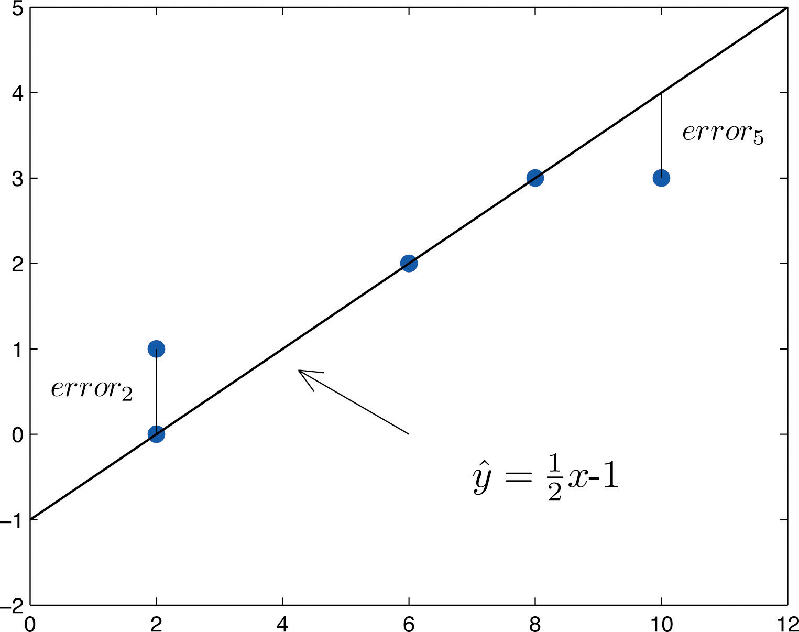To each point in the data set there is associated an “errorUsing , the actual y-value of a data point minus the y-value that is computed from the equation of the line fitting the data.,” the positive or negative vertical distance from the point to the line: positive if the point is above the line and negative if it is below the line. The error can be computed as the actual y-value of the point minus the y-value that is “predicted” by inserting the x-value of the data point into the formula for the line:
The computation of the error for each of the five points in the data set is shown in Table 10.1 "The Errors in Fitting Data with a Straight Line".
Table 10.1 The Errors in Fitting Data with a Straight Line
| x | y | ||||
|---|---|---|---|---|---|
| 2 | 0 | 0 | 0 | 0 | |
| 2 | 1 | 0 | 1 | 1 | |
| 6 | 2 | 2 | 0 | 0 | |
| 8 | 3 | 3 | 0 | 0 | |
| 10 | 3 | 4 | −1 | 1 | |
| Σ | - | - | - | 0 | 2 |
A first thought for a measure of the goodness of fit of the line to the data would be simply to add the errors at every point, but the example shows that this cannot work well in general. The line does not fit the data perfectly (no line can), yet because of cancellation of positive and negative errors the sum of the errors (the fourth column of numbers) is zero. Instead goodness of fit is measured by the sum of the squares of the errors. Squaring eliminates the minus signs, so no cancellation can occur. For the data and line in Figure 10.6 "Plot of the Five-Point Data and the Line " the sum of the squared errors (the last column of numbers) is 2. This number measures the goodness of fit of the line to the data.
The goodness of fit of a line to a set of n pairs of numbers in a sample is the sum of the squared errors
(n terms in the sum, one for each data pair).
Given any collection of pairs of numbers (except when all the x-values are the same) and the corresponding scatter diagram, there always exists exactly one straight line that fits the data better than any other, in the sense of minimizing the sum of the squared errors. It is called the least squares regression line. Moreover there are formulas for its slope and y-intercept.
Given a collection of pairs of numbers (in which not all the x-values are the same), there is a line that best fits the data in the sense of minimizing the sum of the squared errors. It is called the least squares regression lineThe line that best fits a set of sample data in the sense of minimizing the sum of the squared errors.. Its slope and y-intercept are computed using the formulas
where
is the mean of all the x-values, is the mean of all the y-values, and n is the number of pairs in the data set.
The equation specifying the least squares regression line is called the least squares regression equationThe equation of the least squares regression line..
Remember from Section 10.3 "Modelling Linear Relationships with Randomness Present" that the line with the equation is called the population regression line. The numbers and are statistics that estimate the population parameters and
We will compute the least squares regression line for the five-point data set, then for a more practical example that will be another running example for the introduction of new concepts in this and the next three sections.
Find the least squares regression line for the five-point data set
and verify that it fits the data better than the line considered in Section 10.4.1 "Goodness of Fit of a Straight Line to Data".
Solution:
In actual practice computation of the regression line is done using a statistical computation package. In order to clarify the meaning of the formulas we display the computations in tabular form.
| x | y | x2 | ||
|---|---|---|---|---|
| 2 | 0 | 4 | 0 | |
| 2 | 1 | 4 | 2 | |
| 6 | 2 | 36 | 12 | |
| 8 | 3 | 64 | 24 | |
| 10 | 3 | 100 | 30 | |
| Σ | 28 | 9 | 208 | 68 |
In the last line of the table we have the sum of the numbers in each column. Using them we compute:
so that
The least squares regression line for these data is
The computations for measuring how well it fits the sample data are given in Table 10.2 "The Errors in Fitting Data with the Least Squares Regression Line". The sum of the squared errors is the sum of the numbers in the last column, which is 0.75. It is less than 2, the sum of the squared errors for the fit of the line to this data set.
Table 10.2 The Errors in Fitting Data with the Least Squares Regression Line
| x | y | |||
|---|---|---|---|---|
| 2 | 0 | 0.5625 | −0.5625 | 0.31640625 |
| 2 | 1 | 0.5625 | 0.4375 | 0.19140625 |
| 6 | 2 | 1.9375 | 0.0625 | 0.00390625 |
| 8 | 3 | 2.6250 | 0.3750 | 0.14062500 |
| 10 | 3 | 3.3125 | −0.3125 | 0.09765625 |
Table 10.3 "Data on Age and Value of Used Automobiles of a Specific Make and Model" shows the age in years and the retail value in thousands of dollars of a random sample of ten automobiles of the same make and model.
Table 10.3 Data on Age and Value of Used Automobiles of a Specific Make and Model
| x | 2 | 3 | 3 | 3 | 4 | 4 | 5 | 5 | 5 | 6 |
| y | 28.7 | 24.8 | 26.0 | 30.5 | 23.8 | 24.6 | 23.8 | 20.4 | 21.6 | 22.1 |
Solution:
Figure 10.7 Scatter Diagram for Age and Value of Used Automobiles
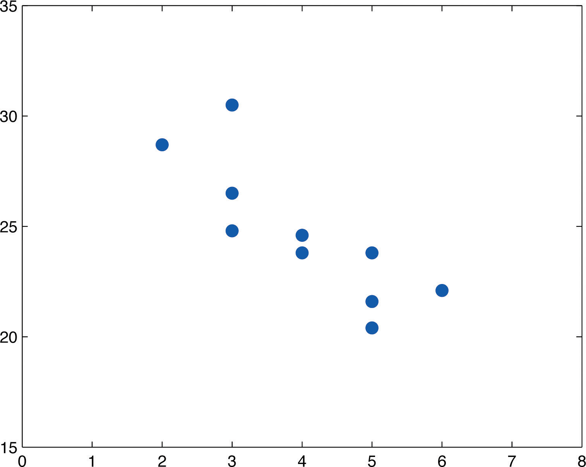We must first compute , , , which means computing , , , , and Using a computing device we obtain
Thus
so that
The age and value of this make and model automobile are moderately strongly negatively correlated. As the age increases, the value of the automobile tends to decrease.
Using the values of and computed in part (b),
Thus using the values of and from part (b),
The equation of the least squares regression line for these sample data is
Figure 10.8 "Scatter Diagram and Regression Line for Age and Value of Used Automobiles" shows the scatter diagram with the graph of the least squares regression line superimposed.
Figure 10.8 Scatter Diagram and Regression Line for Age and Value of Used Automobiles
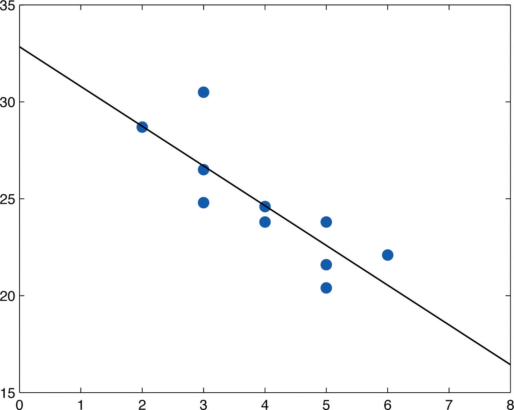Since we know nothing about the automobile other than its age, we assume that it is of about average value and use the average value of all four-year-old vehicles of this make and model as our estimate. The average value is simply the value of obtained when the number 4 is inserted for x in the least squares regression equation:
which corresponds to $24,630.
Now we insert into the least squares regression equation, to obtain
which corresponds to −$8,170. Something is wrong here, since a negative makes no sense. The error arose from applying the regression equation to a value of x not in the range of x-values in the original data, from two to six years.
Applying the regression equation to a value of x outside the range of x-values in the data set is called extrapolation. It is an invalid use of the regression equation and should be avoided.
For emphasis we highlight the points raised by parts (f) and (g) of the example.
The process of using the least squares regression equation to estimate the value of y at a value of x that does not lie in the range of the x-values in the data set that was used to form the regression line is called extrapolationThe process of using the least squares regression equation to estimate the value of y at an x value not in the proper range.. It is an invalid use of the regression equation that can lead to errors, hence should be avoided.
In general, in order to measure the goodness of fit of a line to a set of data, we must compute the predicted y-value at every point in the data set, compute each error, square it, and then add up all the squares. In the case of the least squares regression line, however, the line that best fits the data, the sum of the squared errors can be computed directly from the data using the following formula.
The sum of the squared errors for the least squares regression line is denoted by It can be computed using the formula
Find the sum of the squared errors for the least squares regression line for the five-point data set
Do so in two ways:
Solution:
The numbers and were already computed in Note 10.18 "Example 2" in the process of finding the least squares regression line. So was the number We must compute To do so it is necessary to first compute Then
so that
Find the sum of the squared errors for the least squares regression line for the data set, presented in Table 10.3 "Data on Age and Value of Used Automobiles of a Specific Make and Model", on age and values of used vehicles in Note 10.19 "Example 3".
Solution:
From Note 10.19 "Example 3" we already know that
To compute we first compute
Then
Therefore
For the Basic and Application exercises in this section use the computations that were done for the exercises with the same number in Section 10.2 "The Linear Correlation Coefficient".
Compute the least squares regression line for the data in Exercise 1 of Section 10.2 "The Linear Correlation Coefficient".
Compute the least squares regression line for the data in Exercise 2 of Section 10.2 "The Linear Correlation Coefficient".
Compute the least squares regression line for the data in Exercise 3 of Section 10.2 "The Linear Correlation Coefficient".
Compute the least squares regression line for the data in Exercise 4 of Section 10.2 "The Linear Correlation Coefficient".
For the data in Exercise 5 of Section 10.2 "The Linear Correlation Coefficient"
For the data in Exercise 6 of Section 10.2 "The Linear Correlation Coefficient"
Compute the least squares regression line for the data in Exercise 7 of Section 10.2 "The Linear Correlation Coefficient".
Compute the least squares regression line for the data in Exercise 8 of Section 10.2 "The Linear Correlation Coefficient".
For the data in Exercise 9 of Section 10.2 "The Linear Correlation Coefficient"
For the data in Exercise 10 of Section 10.2 "The Linear Correlation Coefficient"
For the data in Exercise 11 of Section 10.2 "The Linear Correlation Coefficient"
For the data in Exercise 12 of Section 10.2 "The Linear Correlation Coefficient"
For the data in Exercise 13 of Section 10.2 "The Linear Correlation Coefficient"
For the data in Exercise 14 of Section 10.2 "The Linear Correlation Coefficient"
For the data in Exercise 15 of Section 10.2 "The Linear Correlation Coefficient"
For the data in Exercise 16 of Section 10.2 "The Linear Correlation Coefficient"
For the data in Exercise 17 of Section 10.2 "The Linear Correlation Coefficient"
For the data in Exercise 18 of Section 10.2 "The Linear Correlation Coefficient"
For the data in Exercise 19 of Section 10.2 "The Linear Correlation Coefficient"
For the data in Exercise 20 of Section 10.2 "The Linear Correlation Coefficient"
For the data in Exercise 21 of Section 10.2 "The Linear Correlation Coefficient"
For the data in Exercise 22 of Section 10.2 "The Linear Correlation Coefficient"
Verify that no matter what the data are, the least squares regression line always passes through the point with coordinates Hint: Find the predicted value of y when
In Exercise 1 you computed the least squares regression line for the data in Exercise 1 of Section 10.2 "The Linear Correlation Coefficient".
Reverse the roles of x and y and compute the least squares regression line for the new data set
Large Data Set 1 lists the SAT scores and GPAs of 1,000 students.
http://www.gone.2012books.lardbucket.org/sites/all/files/data1.xls
Large Data Set 12 lists the golf scores on one round of golf for 75 golfers first using their own original clubs, then using clubs of a new, experimental design (after two months of familiarization with the new clubs).
http://www.gone.2012books.lardbucket.org/sites/all/files/data12.xls
Large Data Set 13 records the number of bidders and sales price of a particular type of antique grandfather clock at 60 auctions.
http://www.gone.2012books.lardbucket.org/sites/all/files/data13.xls
,
, (cannot use the definition to compute)
The parameter , the slope of the population regression line, is of primary importance in regression analysis because it gives the true rate of change in the mean in response to a unit increase in the predictor variable x. For every unit increase in x the mean of the response variable y changes by units, increasing if and decreasing if We wish to construct confidence intervals for and test hypotheses about it.
The slope of the least squares regression line is a point estimate of A confidence interval for is given by the following formula.
where and the number of degrees of freedom is
The assumptions listed in Section 10.3 "Modelling Linear Relationships with Randomness Present" must hold.
The statistic is called the sample standard deviation of errorsThe statistic .. It estimates the standard deviation σ of the errors in the population of y-values for each fixed value of x (see Figure 10.5 "The Simple Linear Model Concept" in Section 10.3 "Modelling Linear Relationships with Randomness Present").
Construct the 95% confidence interval for the slope of the population regression line based on the five-point sample data set
Solution:
The point estimate of was computed in Note 10.18 "Example 2" in Section 10.4 "The Least Squares Regression Line" as In the same example was found to be The sum of the squared errors was computed in Note 10.23 "Example 4" in Section 10.4 "The Least Squares Regression Line" as Thus
Confidence level 95% means so From the row labeled in Figure 12.3 "Critical Values of " we obtain Therefore
which gives the interval We are 95% confident that the slope of the population regression line is between 0.1215 and 0.5661.
Using the sample data in Table 10.3 "Data on Age and Value of Used Automobiles of a Specific Make and Model" construct a 90% confidence interval for the slope of the population regression line relating age and value of the automobiles of Note 10.19 "Example 3" in Section 10.4 "The Least Squares Regression Line". Interpret the result in the context of the problem.
Solution:
The point estimate of was computed in Note 10.19 "Example 3", as was Their values are and The sum of the squared errors was computed in Note 10.24 "Example 5" in Section 10.4 "The Least Squares Regression Line" as Thus
Confidence level 90% means so From the row labeled in Figure 12.3 "Critical Values of " we obtain Therefore
which gives the interval We are 90% confident that the slope of the population regression line is between −3.00 and −1.10. In the context of the problem this means that for vehicles of this make and model between two and six years old we are 90% confident that for each additional year of age the average value of such a vehicle decreases by between $1,100 and $3,000.
Hypotheses regarding can be tested using the same five-step procedures, either the critical value approach or the p-value approach, that were introduced in Section 8.1 "The Elements of Hypothesis Testing" and Section 8.3 "The Observed Significance of a Test" of Chapter 8 "Testing Hypotheses". The null hypothesis always has the form where B0 is a number determined from the statement of the problem. The three forms of the alternative hypothesis, with the terminology for each case, are:
| Form of Ha | Terminology |
|---|---|
| Left-tailed | |
| Right-tailed | |
| Two-tailed |
The value zero for B0 is of particular importance since in that case the null hypothesis is , which corresponds to the situation in which x is not useful for predicting y. For if then the population regression line is horizontal, so the mean is the same for every value of x and we are just as well off in ignoring x completely and approximating y by its average value. Given two variables x and y, the burden of proof is that x is useful for predicting y, not that it is not. Thus the phrase “test whether x is useful for prediction of y,” or words to that effect, means to perform the test
The test statistic has Student’s t-distribution with degrees of freedom.
The assumptions listed in Section 10.3 "Modelling Linear Relationships with Randomness Present" must hold.
Test, at the 2% level of significance, whether the variable x is useful for predicting y based on the information in the five-point data set
Solution:
We will perform the test using the critical value approach.
Step 1. Since x is useful for prediction of y precisely when the slope of the population regression line is nonzero, the relevant test is
Step 2. The test statistic is
and has Student’s t-distribution with degrees of freedom.
Step 3. From Note 10.18 "Example 2", and From Note 10.30 "Example 6", The value of the test statistic is therefore
Step 5. As shown in Figure 10.9 "Rejection Region and Test Statistic for " the test statistic falls in the rejection region. The decision is to reject H0. In the context of the problem our conclusion is:
The data provide sufficient evidence, at the 2% level of significance, to conclude that the slope of the population regression line is nonzero, so that x is useful as a predictor of y.
Figure 10.9 Rejection Region and Test Statistic for Note 10.33 "Example 8"
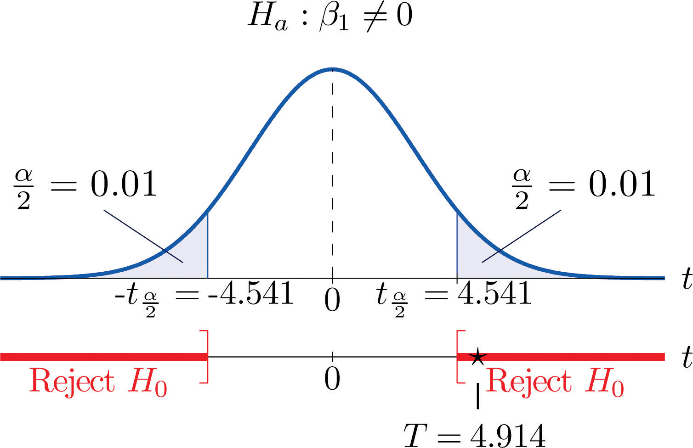A car salesman claims that automobiles between two and six years old of the make and model discussed in Note 10.19 "Example 3" in Section 10.4 "The Least Squares Regression Line" lose more than $1,100 in value each year. Test this claim at the 5% level of significance.
Solution:
We will perform the test using the critical value approach.
Step 1. In terms of the variables x and y, the salesman’s claim is that if x is increased by 1 unit (one additional year in age), then y decreases by more than 1.1 units (more than $1,100). Thus his assertion is that the slope of the population regression line is negative, and that it is more negative than −1.1. In symbols, Since it contains an inequality, this has to be the alternative hypotheses. The null hypothesis has to be an equality and have the same number on the right hand side, so the relevant test is
Step 2. The test statistic is
and has Student’s t-distribution with 8 degrees of freedom.
Step 3. From Note 10.19 "Example 3", and From Note 10.31 "Example 7", The value of the test statistic is therefore
Step 5. As shown in Figure 10.10 "Rejection Region and Test Statistic for " the test statistic falls in the rejection region. The decision is to reject H0. In the context of the problem our conclusion is:
The data provide sufficient evidence, at the 5% level of significance, to conclude that vehicles of this make and model and in this age range lose more than $1,100 per year in value, on average.
Figure 10.10 Rejection Region and Test Statistic for Note 10.34 "Example 9"
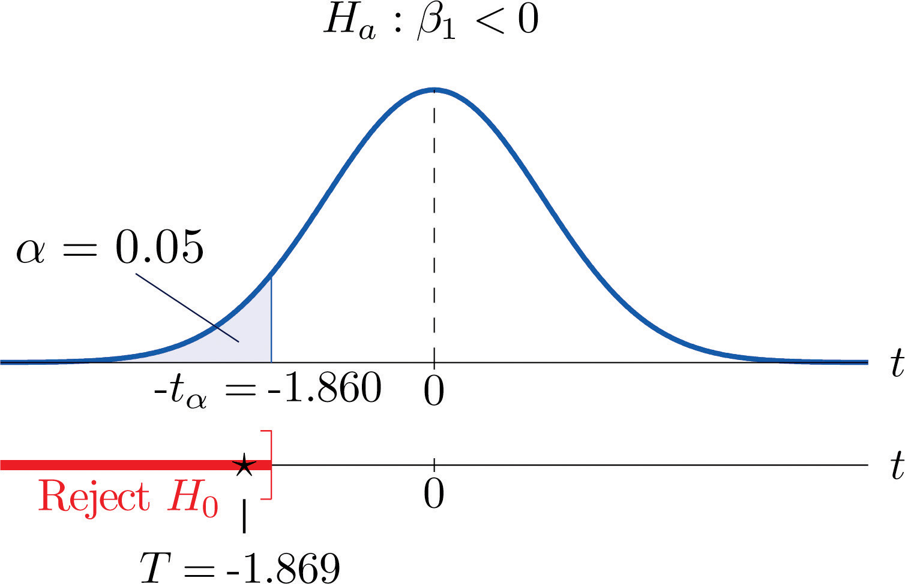For the Basic and Application exercises in this section use the computations that were done for the exercises with the same number in Section 10.2 "The Linear Correlation Coefficient" and Section 10.4 "The Least Squares Regression Line".
Construct the 95% confidence interval for the slope of the population regression line based on the sample data set of Exercise 1 of Section 10.2 "The Linear Correlation Coefficient".
Construct the 90% confidence interval for the slope of the population regression line based on the sample data set of Exercise 2 of Section 10.2 "The Linear Correlation Coefficient".
Construct the 90% confidence interval for the slope of the population regression line based on the sample data set of Exercise 3 of Section 10.2 "The Linear Correlation Coefficient".
Construct the 99% confidence interval for the slope of the population regression Exercise 4 of Section 10.2 "The Linear Correlation Coefficient".
For the data in Exercise 5 of Section 10.2 "The Linear Correlation Coefficient" test, at the 10% level of significance, whether x is useful for predicting y (that is, whether ).
For the data in Exercise 6 of Section 10.2 "The Linear Correlation Coefficient" test, at the 5% level of significance, whether x is useful for predicting y (that is, whether ).
Construct the 90% confidence interval for the slope of the population regression line based on the sample data set of Exercise 7 of Section 10.2 "The Linear Correlation Coefficient".
Construct the 95% confidence interval for the slope of the population regression line based on the sample data set of Exercise 8 of Section 10.2 "The Linear Correlation Coefficient".
For the data in Exercise 9 of Section 10.2 "The Linear Correlation Coefficient" test, at the 1% level of significance, whether x is useful for predicting y (that is, whether ).
For the data in Exercise 10 of Section 10.2 "The Linear Correlation Coefficient" test, at the 1% level of significance, whether x is useful for predicting y (that is, whether ).
For the data in Exercise 11 of Section 10.2 "The Linear Correlation Coefficient" construct a 90% confidence interval for the mean number of new words acquired per month by children between 13 and 18 months of age.
For the data in Exercise 12 of Section 10.2 "The Linear Correlation Coefficient" construct a 90% confidence interval for the mean increased braking distance for each additional 100 pounds of vehicle weight.
For the data in Exercise 13 of Section 10.2 "The Linear Correlation Coefficient" test, at the 10% level of significance, whether age is useful for predicting resting heart rate.
For the data in Exercise 14 of Section 10.2 "The Linear Correlation Coefficient" test, at the 10% level of significance, whether wind speed is useful for predicting wave height.
For the situation described in Exercise 15 of Section 10.2 "The Linear Correlation Coefficient"
For the situation described in Exercise 16 of Section 10.2 "The Linear Correlation Coefficient"
For the data in Exercise 17 of Section 10.2 "The Linear Correlation Coefficient" test, at the 10% level of significance, whether course average before the final exam is useful for predicting the final exam grade.
For the situation described in Exercise 18 of Section 10.2 "The Linear Correlation Coefficient", an agronomist claims that each additional million acres planted results in more than 750,000 additional acres harvested. Test this claim at the 1% level of significance.
For the data in Exercise 19 of Section 10.2 "The Linear Correlation Coefficient" test, at the 1/10th of 1% level of significance, whether, ignoring all other facts such as age and body mass, the amount of the medication consumed is a useful predictor of blood concentration of the active ingredient.
For the data in Exercise 20 of Section 10.2 "The Linear Correlation Coefficient" test, at the 1% level of significance, whether for each additional inch of girth the age of the tree increases by at least two and one-half years.
For the data in Exercise 21 of Section 10.2 "The Linear Correlation Coefficient"
For the situation described in Exercise 22 of Section 10.2 "The Linear Correlation Coefficient"
Large Data Set 1 lists the SAT scores and GPAs of 1,000 students.
http://www.gone.2012books.lardbucket.org/sites/all/files/data1.xls
Large Data Set 12 lists the golf scores on one round of golf for 75 golfers first using their own original clubs, then using clubs of a new, experimental design (after two months of familiarization with the new clubs).
http://www.gone.2012books.lardbucket.org/sites/all/files/data12.xls
Large Data Set 13 records the number of bidders and sales price of a particular type of antique grandfather clock at 60 auctions.
http://www.gone.2012books.lardbucket.org/sites/all/files/data13.xls
, , do not reject H0
, , reject H0
words
, , reject H0
, , reject H0
, , reject H0
If the scatter diagram of a set of pairs shows neither an upward or downward trend, then the horizontal line fits it well, as illustrated in Figure 10.11. The lack of any upward or downward trend means that when an element of the population is selected at random, knowing the value of the measurement x for that element is not helpful in predicting the value of the measurement y.
Figure 10.11
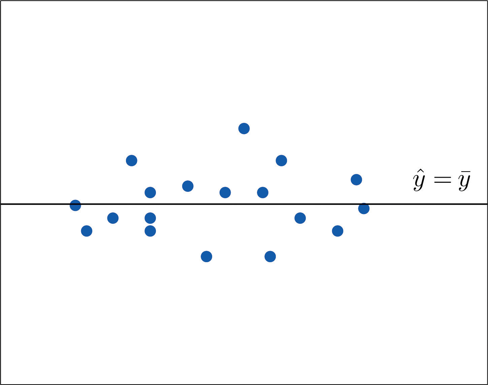The line fits the scatter diagram well.
If the scatter diagram shows a linear trend upward or downward then it is useful to compute the least squares regression line and use it in predicting y. Figure 10.12 "Same Scatter Diagram with Two Approximating Lines" illustrates this. In each panel we have plotted the height and weight data of Section 10.1 "Linear Relationships Between Variables". This is the same scatter plot as Figure 10.2 "Plot of Height and Weight Pairs", with the average value line superimposed on it in the left panel and the least squares regression line imposed on it in the right panel. The errors are indicated graphically by the vertical line segments.
Figure 10.12 Same Scatter Diagram with Two Approximating Lines
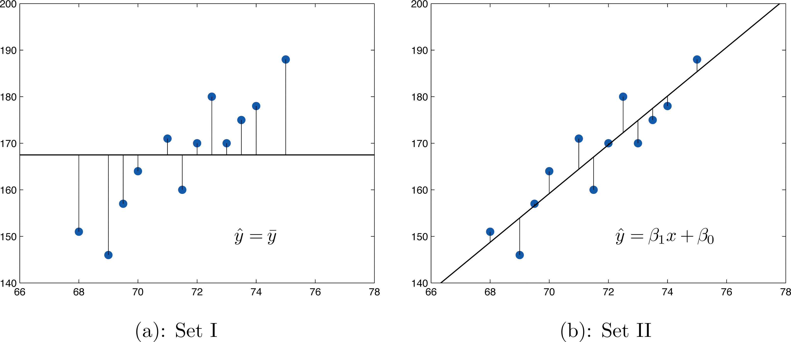The sum of the squared errors computed for the regression line, , is smaller than the sum of the squared errors computed for any other line. In particular it is less than the sum of the squared errors computed using the line , which sum is actually the number that we have seen several times already. A measure of how useful it is to use the regression equation for prediction of y is how much smaller is than In particular, the proportion of the sum of the squared errors for the line that is eliminated by going over to the least squares regression line is
We can think of as the proportion of the variability in y that cannot be accounted for by the linear relationship between x and y, since it is still there even when x is taken into account in the best way possible (using the least squares regression line; remember that is the smallest the sum of the squared errors can be for any line). Seen in this light, the coefficient of determination, the complementary proportion of the variability in y, is the proportion of the variability in all the y measurements that is accounted for by the linear relationship between x and y.
In the context of linear regression the coefficient of determination is always the square of the correlation coefficient r discussed in Section 10.2 "The Linear Correlation Coefficient". Thus the coefficient of determination is denoted r2, and we have two additional formulas for computing it.
The coefficient of determinationA number that measures the proportion of the variability in y that is explained by x. of a collection of pairs is the number r2 computed by any of the following three expressions:
It measures the proportion of the variability in y that is accounted for by the linear relationship between x and y.
If the correlation coefficient r is already known then the coefficient of determination can be computed simply by squaring r, as the notation indicates,
The value of used vehicles of the make and model discussed in Note 10.19 "Example 3" in Section 10.4 "The Least Squares Regression Line" varies widely. The most expensive automobile in the sample in Table 10.3 "Data on Age and Value of Used Automobiles of a Specific Make and Model" has value $30,500, which is nearly half again as much as the least expensive one, which is worth $20,400. Find the proportion of the variability in value that is accounted for by the linear relationship between age and value.
Solution:
The proportion of the variability in value y that is accounted for by the linear relationship between it and age x is given by the coefficient of determination, r2. Since the correlation coefficient r was already computed in Note 10.19 "Example 3" as , About 67% of the variability in the value of this vehicle can be explained by its age.
Use each of the three formulas for the coefficient of determination to compute its value for the example of ages and values of vehicles.
Solution:
In Note 10.19 "Example 3" in Section 10.4 "The Least Squares Regression Line" we computed the exact values
In Note 10.24 "Example 5" in Section 10.4 "The Least Squares Regression Line" we computed the exact value
Inserting these values into the formulas in the definition, one after the other, gives
which rounds to 0.670. The discrepancy between the value here and in the previous example is because a rounded value of r from Note 10.19 "Example 3" was used there. The actual value of r before rounding is 0.8186864772, which when squared gives the value for r2 obtained here.
The coefficient of determination r2 can always be computed by squaring the correlation coefficient r if it is known. Any one of the defining formulas can also be used. Typically one would make the choice based on which quantities have already been computed. What should be avoided is trying to compute r by taking the square root of r2, if it is already known, since it is easy to make a sign error this way. To see what can go wrong, suppose Taking the square root of a positive number with any calculating device will always return a positive result. The square root of 0.64 is 0.8. However, the actual value of r might be the negative number −0.8.
For the Basic and Application exercises in this section use the computations that were done for the exercises with the same number in Section 10.2 "The Linear Correlation Coefficient", Section 10.4 "The Least Squares Regression Line", and Section 10.5 "Statistical Inferences About ".
For the sample data set of Exercise 1 of Section 10.2 "The Linear Correlation Coefficient" find the coefficient of determination using the formula Confirm your answer by squaring r as computed in that exercise.
For the sample data set of Exercise 2 of Section 10.2 "The Linear Correlation Coefficient" find the coefficient of determination using the formula Confirm your answer by squaring r as computed in that exercise.
For the sample data set of Exercise 3 of Section 10.2 "The Linear Correlation Coefficient" find the coefficient of determination using the formula Confirm your answer by squaring r as computed in that exercise.
For the sample data set of Exercise 4 of Section 10.2 "The Linear Correlation Coefficient" find the coefficient of determination using the formula Confirm your answer by squaring r as computed in that exercise.
For the sample data set of Exercise 5 of Section 10.2 "The Linear Correlation Coefficient" find the coefficient of determination using the formula Confirm your answer by squaring r as computed in that exercise.
For the sample data set of Exercise 6 of Section 10.2 "The Linear Correlation Coefficient" find the coefficient of determination using the formula Confirm your answer by squaring r as computed in that exercise.
For the sample data set of Exercise 7 of Section 10.2 "The Linear Correlation Coefficient" find the coefficient of determination using the formula Confirm your answer by squaring r as computed in that exercise.
For the sample data set of Exercise 8 of Section 10.2 "The Linear Correlation Coefficient" find the coefficient of determination using the formula Confirm your answer by squaring r as computed in that exercise.
For the sample data set of Exercise 9 of Section 10.2 "The Linear Correlation Coefficient" find the coefficient of determination using the formula Confirm your answer by squaring r as computed in that exercise.
For the sample data set of Exercise 9 of Section 10.2 "The Linear Correlation Coefficient" find the coefficient of determination using the formula Confirm your answer by squaring r as computed in that exercise.
For the data in Exercise 11 of Section 10.2 "The Linear Correlation Coefficient" compute the coefficient of determination and interpret its value in the context of age and vocabulary.
For the data in Exercise 12 of Section 10.2 "The Linear Correlation Coefficient" compute the coefficient of determination and interpret its value in the context of vehicle weight and braking distance.
For the data in Exercise 13 of Section 10.2 "The Linear Correlation Coefficient" compute the coefficient of determination and interpret its value in the context of age and resting heart rate. In the age range of the data, does age seem to be a very important factor with regard to heart rate?
For the data in Exercise 14 of Section 10.2 "The Linear Correlation Coefficient" compute the coefficient of determination and interpret its value in the context of wind speed and wave height. Does wind speed seem to be a very important factor with regard to wave height?
For the data in Exercise 15 of Section 10.2 "The Linear Correlation Coefficient" find the proportion of the variability in revenue that is explained by level of advertising.
For the data in Exercise 16 of Section 10.2 "The Linear Correlation Coefficient" find the proportion of the variability in adult height that is explained by the variation in length at age two.
For the data in Exercise 17 of Section 10.2 "The Linear Correlation Coefficient" compute the coefficient of determination and interpret its value in the context of course average before the final exam and score on the final exam.
For the data in Exercise 18 of Section 10.2 "The Linear Correlation Coefficient" compute the coefficient of determination and interpret its value in the context of acres planted and acres harvested.
For the data in Exercise 19 of Section 10.2 "The Linear Correlation Coefficient" compute the coefficient of determination and interpret its value in the context of the amount of the medication consumed and blood concentration of the active ingredient.
For the data in Exercise 20 of Section 10.2 "The Linear Correlation Coefficient" compute the coefficient of determination and interpret its value in the context of tree size and age.
For the data in Exercise 21 of Section 10.2 "The Linear Correlation Coefficient" find the proportion of the variability in 28-day strength of concrete that is accounted for by variation in 3-day strength.
For the data in Exercise 22 of Section 10.2 "The Linear Correlation Coefficient" find the proportion of the variability in energy demand that is accounted for by variation in average temperature.
Large Data Set 1 lists the SAT scores and GPAs of 1,000 students. Compute the coefficient of determination and interpret its value in the context of SAT scores and GPAs.
http://www.gone.2012books.lardbucket.org/sites/all/files/data1.xls
Large Data Set 12 lists the golf scores on one round of golf for 75 golfers first using their own original clubs, then using clubs of a new, experimental design (after two months of familiarization with the new clubs). Compute the coefficient of determination and interpret its value in the context of golf scores with the two kinds of golf clubs.
http://www.gone.2012books.lardbucket.org/sites/all/files/data12.xls
Large Data Set 13 records the number of bidders and sales price of a particular type of antique grandfather clock at 60 auctions. Compute the coefficient of determination and interpret its value in the context of the number of bidders at an auction and the price of this type of antique grandfather clock.
http://www.gone.2012books.lardbucket.org/sites/all/files/data13.xls
0.848
0.631
0.5
0.766
0.715
0.898; about 90% of the variability in vocabulary is explained by age
0.503; about 50% of the variability in heart rate is explained by age. Age is a significant but not dominant factor in explaining heart rate.
The proportion is r2 = 0.692.
0.563; about 56% of the variability in final exam scores is explained by course average before the final exam
0.931; about 93% of the variability in the blood concentration of the active ingredient is explained by the amount of the medication consumed
The proportion is r2 = 0.984.
Consider the following pairs of problems, in the context of Note 10.19 "Example 3" in Section 10.4 "The Least Squares Regression Line", the automobile age and value example.
The method of solution and answer to the first question in each pair, (1a) and (2a), are the same. When we set x equal to 4 in the least squares regression equation that was computed in part (c) of Note 10.19 "Example 3" in Section 10.4 "The Least Squares Regression Line", the number returned,
which corresponds to value $24,630, is an estimate of precisely the number sought in question (1a): the mean of all y values when x = 4. Since nothing is known about the first four-year-old automobile of this make and model that Shylock will encounter, our best guess as to its value is the mean value of all such automobiles, the number 24.63 or $24,630, computed in the same way.
The answers to the second part of each question differ. In question (1b) we are trying to estimate a population parameter: the mean of the all the y-values in the sub-population picked out by the value x = 4, that is, the average value of all four-year-old automobiles. In question (2b), however, we are not trying to capture a fixed parameter, but the value of the random variable y in one trial of an experiment: examine the first four-year-old car Shylock encounters. In the first case we seek to construct a confidence interval in the same sense that we have done before. In the second case the situation is different, and the interval constructed has a different name, prediction interval. In the second case we are trying to “predict” where a the value of a random variable will take its value.
where
The assumptions listed in Section 10.3 "Modelling Linear Relationships with Randomness Present" must hold.
The formula for the prediction interval is identical except for the presence of the number 1 underneath the square root sign. This means that the prediction interval is always wider than the confidence interval at the same confidence level and value of x. In practice the presence of the number 1 tends to make it much wider.
where
The assumptions listed in Section 10.3 "Modelling Linear Relationships with Randomness Present" must hold.
Using the sample data of Note 10.19 "Example 3" in Section 10.4 "The Least Squares Regression Line", recorded in Table 10.3 "Data on Age and Value of Used Automobiles of a Specific Make and Model", construct a 95% confidence interval for the average value of all three-and-one-half-year-old automobiles of this make and model.
Solution:
Solving this problem is merely a matter of finding the values of , and , , , and and inserting them into the confidence interval formula given just above. Most of these quantities are already known. From Note 10.19 "Example 3" in Section 10.4 "The Least Squares Regression Line", and From Note 10.31 "Example 7" in Section 10.5 "Statistical Inferences About ",
From the statement of the problem , the value of x of interest. The value of is the number given by the regression equation, which by Note 10.19 "Example 3" is , when , that is, when x = 3.5. Thus here
Lastly, confidence level 95% means that so Since the sample size is n = 10, there are degrees of freedom. By Figure 12.3 "Critical Values of ", Thus
which gives the interval
We are 95% confident that the average value of all three-and-one-half-year-old vehicles of this make and model is between $24,149 and $27,161.
Using the sample data of Note 10.19 "Example 3" in Section 10.4 "The Least Squares Regression Line", recorded in Table 10.3 "Data on Age and Value of Used Automobiles of a Specific Make and Model", construct a 95% prediction interval for the predicted value of a randomly selected three-and-one-half-year-old automobile of this make and model.
Solution:
The computations for this example are identical to those of the previous example, except that now there is the extra number 1 beneath the square root sign. Since we were careful to record the intermediate results of that computation, we have immediately that the 95% prediction interval is
which gives the interval
We are 95% confident that the value of a randomly selected three-and-one-half-year-old vehicle of this make and model is between $21,017 and $30,293.
Note what an enormous difference the presence of the extra number 1 under the square root sign made. The prediction interval is about two-and-one-half times wider than the confidence interval at the same level of confidence.
For the Basic and Application exercises in this section use the computations that were done for the exercises with the same number in previous sections.
For the sample data set of Exercise 1 of Section 10.2 "The Linear Correlation Coefficient"
For the sample data set of Exercise 2 of Section 10.2 "The Linear Correlation Coefficient"
For the sample data set of Exercise 3 of Section 10.2 "The Linear Correlation Coefficient"
For the sample data set of Exercise 4 of Section 10.2 "The Linear Correlation Coefficient"
For the sample data set of Exercise 5 of Section 10.2 "The Linear Correlation Coefficient"
For the sample data set of Exercise 6 of Section 10.2 "The Linear Correlation Coefficient"
For the sample data set of Exercise 7 of Section 10.2 "The Linear Correlation Coefficient"
For the sample data set of Exercise 8 of Section 10.2 "The Linear Correlation Coefficient"
For the sample data set of Exercise 9 of Section 10.2 "The Linear Correlation Coefficient"
For the sample data set of Exercise 9 of Section 10.2 "The Linear Correlation Coefficient"
For the data in Exercise 11 of Section 10.2 "The Linear Correlation Coefficient"
For the data in Exercise 12 of Section 10.2 "The Linear Correlation Coefficient"
For the data in Exercise 13 of Section 10.2 "The Linear Correlation Coefficient"
For the data in Exercise 14 of Section 10.2 "The Linear Correlation Coefficient"
For the data in Exercise 15 of Section 10.2 "The Linear Correlation Coefficient"
For the data in Exercise 16 of Section 10.2 "The Linear Correlation Coefficient"
For the data in Exercise 17 of Section 10.2 "The Linear Correlation Coefficient"
For the data in Exercise 18 of Section 10.2 "The Linear Correlation Coefficient"
For the data in Exercise 19 of Section 10.2 "The Linear Correlation Coefficient"
For the data in Exercise 20 of Section 10.2 "The Linear Correlation Coefficient"
For the data in Exercise 21 of Section 10.2 "The Linear Correlation Coefficient"
For the data in Exercise 22 of Section 10.2 "The Linear Correlation Coefficient"
Large Data Set 1 lists the SAT scores and GPAs of 1,000 students.
http://www.gone.2012books.lardbucket.org/sites/all/files/data1.xls
Large Data Set 12 lists the golf scores on one round of golf for 75 golfers first using their own original clubs, then using clubs of a new, experimental design (after two months of familiarization with the new clubs).
http://www.gone.2012books.lardbucket.org/sites/all/files/data12.xls
Large Data Set 13 records the number of bidders and sales price of a particular type of antique grandfather clock at 60 auctions.
http://www.gone.2012books.lardbucket.org/sites/all/files/data13.xls
In the preceding sections numerous concepts were introduced and illustrated, but the analysis was broken into disjoint pieces by sections. In this section we will go through a complete example of the use of correlation and regression analysis of data from start to finish, touching on all the topics of this chapter in sequence.
In general educators are convinced that, all other factors being equal, class attendance has a significant bearing on course performance. To investigate the relationship between attendance and performance, an education researcher selects for study a multiple section introductory statistics course at a large university. Instructors in the course agree to keep an accurate record of attendance throughout one semester. At the end of the semester 26 students are selected a random. For each student in the sample two measurements are taken: x, the number of days the student was absent, and y, the student’s score on the common final exam in the course. The data are summarized in Table 10.4 "Absence and Score Data".
Table 10.4 Absence and Score Data
| Absences | Score | Absences | Score |
|---|---|---|---|
| x | y | x | y |
| 2 | 76 | 4 | 41 |
| 7 | 29 | 5 | 63 |
| 2 | 96 | 4 | 88 |
| 7 | 63 | 0 | 98 |
| 2 | 79 | 1 | 99 |
| 7 | 71 | 0 | 89 |
| 0 | 88 | 1 | 96 |
| 0 | 92 | 3 | 90 |
| 6 | 55 | 1 | 90 |
| 6 | 70 | 3 | 68 |
| 2 | 80 | 1 | 84 |
| 2 | 75 | 3 | 80 |
| 1 | 63 | 1 | 78 |
A scatter plot of the data is given in Figure 10.13 "Plot of the Absence and Exam Score Pairs". There is a downward trend in the plot which indicates that on average students with more absences tend to do worse on the final examination.
Figure 10.13 Plot of the Absence and Exam Score Pairs
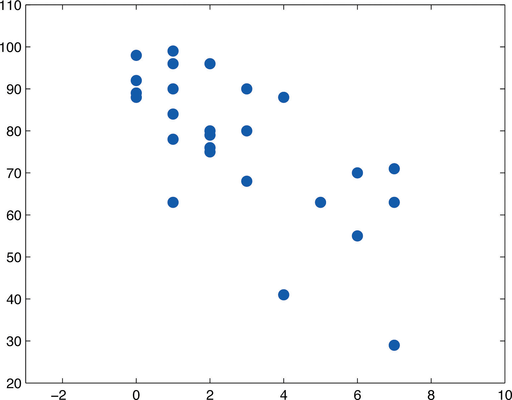The trend observed in Figure 10.13 "Plot of the Absence and Exam Score Pairs" as well as the fairly constant width of the apparent band of points in the plot makes it reasonable to assume a relationship between x and y of the form
where and are unknown parameters and ε is a normal random variable with mean zero and unknown standard deviation σ. Note carefully that this model is being proposed for the population of all students taking this course, not just those taking it this semester, and certainly not just those in the sample. The numbers , , and σ are parameters relating to this large population.
First we perform preliminary computations that will be needed later. The data are processed in Table 10.5 "Processed Absence and Score Data".
Table 10.5 Processed Absence and Score Data
| x | y | x2 | xy | y2 | x | y | x2 | xy | y2 |
|---|---|---|---|---|---|---|---|---|---|
| 2 | 76 | 4 | 152 | 5776 | 4 | 41 | 16 | 164 | 1681 |
| 7 | 29 | 49 | 203 | 841 | 5 | 63 | 25 | 315 | 3969 |
| 2 | 96 | 4 | 192 | 9216 | 4 | 88 | 16 | 352 | 7744 |
| 7 | 63 | 49 | 441 | 3969 | 0 | 98 | 0 | 0 | 9604 |
| 2 | 79 | 4 | 158 | 6241 | 1 | 99 | 1 | 99 | 9801 |
| 7 | 71 | 49 | 497 | 5041 | 0 | 89 | 0 | 0 | 7921 |
| 0 | 88 | 0 | 0 | 7744 | 1 | 96 | 1 | 96 | 9216 |
| 0 | 92 | 0 | 0 | 8464 | 3 | 90 | 9 | 270 | 8100 |
| 6 | 55 | 36 | 330 | 3025 | 1 | 90 | 1 | 90 | 8100 |
| 6 | 70 | 36 | 420 | 4900 | 3 | 68 | 9 | 204 | 4624 |
| 2 | 80 | 4 | 160 | 6400 | 1 | 84 | 1 | 84 | 7056 |
| 2 | 75 | 4 | 150 | 5625 | 3 | 80 | 9 | 240 | 6400 |
| 1 | 63 | 1 | 63 | 3969 | 1 | 78 | 1 | 78 | 6084 |
Adding up the numbers in each column in Table 10.5 "Processed Absence and Score Data" gives
Then
and
We begin the actual modelling by finding the least squares regression line, the line that best fits the data. Its slope and y-intercept are
Rounding these numbers to two decimal places, the least squares regression line for these data is
The goodness of fit of this line to the scatter plot, the sum of its squared errors, is
This number is not particularly informative in itself, but we use it to compute the important statistic
The statistic estimates the standard deviation σ of the normal random variable ε in the model. Its meaning is that among all students with the same number of absences, the standard deviation of their scores on the final exam is about 12.1 points. Such a large value on a 100-point exam means that the final exam scores of each sub-population of students, based on the number of absences, are highly variable.
The size and sign of the slope indicate that, for every class missed, students tend to score about 5.23 fewer points lower on the final exam on average. Similarly for every two classes missed students tend to score on average fewer points on the final exam, or about a letter grade worse on average.
Since 0 is in the range of x-values in the data set, the y-intercept also has meaning in this problem. It is an estimate of the average grade on the final exam of all students who have perfect attendance. The predicted average of such students is
Before we use the regression equation further, or perform other analyses, it would be a good idea to examine the utility of the linear regression model. We can do this in two ways: 1) by computing the correlation coefficient r to see how strongly the number of absences x and the score y on the final exam are correlated, and 2) by testing the null hypothesis (the slope of the population regression line is zero, so x is not a good predictor of y) against the natural alternative (the slope of the population regression line is negative, so final exam scores y go down as absences x go up).
The correlation coefficient r is
a moderate negative correlation.
Turning to the test of hypotheses, let us test at the commonly used 5% level of significance. The test is
From Figure 12.3 "Critical Values of ", with degrees of freedom , so the rejection region is The value of the standardized test statistic is
which falls in the rejection region. We reject H0 in favor of Ha. The data provide sufficient evidence, at the 5% level of significance, to conclude that is negative, meaning that as the number of absences increases average score on the final exam decreases.
As already noted, the value gives a point estimate of how much one additional absence is reflected in the average score on the final exam. For each additional absence the average drops by about 5.23 points. We can widen this point estimate to a confidence interval for At the 95% confidence level, from Figure 12.3 "Critical Values of " with degrees of freedom, The 95% confidence interval for based on our sample data is
or We are 95% confident that, among all students who ever take this course, for each additional class missed the average score on the final exam goes down by between 3.08 and 7.38 points.
If we restrict attention to the sub-population of all students who have exactly five absences, say, then using the least squares regression equation we estimate that the average score on the final exam for those students is
This is also our best guess as to the score on the final exam of any particular student who is absent five times. A 95% confidence interval for the average score on the final exam for all students with five absences is
which is the interval This confidence interval suggests that the true mean score on the final exam for all students who are absent from class exactly five times during the semester is likely to be between 58.17 and 72.01.
If a particular student misses exactly five classes during the semester, his score on the final exam is predicted with 95% confidence to be in the interval
which is the interval This prediction interval suggests that this individual student’s final exam score is likely to be between 39.13 and 91.05. Whereas the 95% confidence interval for the average score of all student with five absences gave real information, this interval is so wide that it says practically nothing about what the individual student’s final exam score might be. This is an example of the dramatic effect that the presence of the extra summand 1 under the square sign in the prediction interval can have.
Finally, the proportion of the variability in the scores of students on the final exam that is explained by the linear relationship between that score and the number of absences is estimated by the coefficient of determination, r2. Since we have already computed r above we easily find that
or about 49%. Thus although there is a significant correlation between attendance and performance on the final exam, and we can estimate with fair accuracy the average score of students who miss a certain number of classes, nevertheless less than half the total variation of the exam scores in the sample is explained by the number of absences. This should not come as a surprise, since there are many factors besides attendance that bear on student performance on exams.
The exercises in this section are unrelated to those in previous sections.
The data give the amount x of silicofluoride in the water (mg/L) and the amount y of lead in the bloodstream (μg/dL) of ten children in various communities with and without municipal water. Perform a complete analysis of the data, in analogy with the discussion in this section (that is, make a scatter plot, do preliminary computations, find the least squares regression line, find , , and r, and so on). In the hypothesis test use as the alternative hypothesis , and test at the 5% level of significance. Use confidence level 95% for the confidence interval for Construct 95% confidence and predictions intervals at at the end.
The table gives the weight x (thousands of pounds) and available heat energy y (million BTU) of a standard cord of various species of wood typically used for heating. Perform a complete analysis of the data, in analogy with the discussion in this section (that is, make a scatter plot, do preliminary computations, find the least squares regression line, find , , and r, and so on). In the hypothesis test use as the alternative hypothesis , and test at the 5% level of significance. Use confidence level 95% for the confidence interval for Construct 95% confidence and predictions intervals at at the end.
Large Data Sets 3 and 3A list the shoe sizes and heights of 174 customers entering a shoe store. The gender of the customer is not indicated in Large Data Set 3. However, men’s and women’s shoes are not measured on the same scale; for example, a size 8 shoe for men is not the same size as a size 8 shoe for women. Thus it would not be meaningful to apply regression analysis to Large Data Set 3. Nevertheless, compute the scatter diagrams, with shoe size as the independent variable (x) and height as the dependent variable (y), for (i) just the data on men, (ii) just the data on women, and (iii) the full mixed data set with both men and women. Does the third, invalid scatter diagram look markedly different from the other two?
http://www.gone.2012books.lardbucket.org/sites/all/files/data3.xls
http://www.gone.2012books.lardbucket.org/sites/all/files/data3A.xls
Separate out from Large Data Set 3A just the data on men and do a complete analysis, with shoe size as the independent variable (x) and height as the dependent variable (y). Use and whenever appropriate.
http://www.gone.2012books.lardbucket.org/sites/all/files/data3A.xls
Separate out from Large Data Set 3A just the data on women and do a complete analysis, with shoe size as the independent variable (x) and height as the dependent variable (y). Use and whenever appropriate.
http://www.gone.2012books.lardbucket.org/sites/all/files/data3A.xls
, , , ,
, ,
,
,
r = 0.9174, r2 = 0.8416.
, T = 6.518.
The 95% confidence interval for is:
At , the 95% confidence interval for is
At , the 95% prediction interval for y is
The positively correlated trend seems less profound than that in each of the previous plots.
The regression line: Coefficient of Correlation: r = 0.9431. Coefficient of Determination: r2 = 0.8894. A 95% confidence interval for : Test Statistic for : T = 24.7209. At , ; a 95% confidence interval for the mean value of y is: ; and a 95% prediction interval for an individual value of y is:
Correlation coefficient:
Least squares regression equation (equation of the least squares regression line):
Sum of the squared errors for the least squares regression line:
Sample standard deviation of errors:
confidence interval for :
Standardized test statistic for hypothesis tests concerning :
Coefficient of determination:
confidence interval for the mean value of y at :
prediction interval for an individual new value of y at :